리눅스마스터-2급 (2019-09-21 기출문제)
1과목: 리눅스 운영 및 관리
1. 다음 중 사용자 쿼터를 설정하기 위해 /etc/fstab에 설정하는 항목 값으로 알맞은 것은?
- quota
- uquota
- usrquota
- userquota
(정답률: 65%)

2. 다음 ( 괄호 ) 안에 들어갈 내용으로 알맞은 것은?
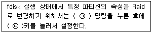
- ㉠ n, ㉡ 8e
- ㉠ n, ㉡ fd
- ㉠ t, ㉡ 8e
- ㉠ t, ㉡ fd
(정답률: 58%)
3. 다음 중 lin.txt 파일의 허가권 값을 알지 못하는 상태에서 'chmod 755 lin.txt' 명령과 동일한 명령으로 알맞은 것은?
- chmod u+rwx,go+rx lin.txt
- chmod u=rwx,go+rx lin.txt
- chmod u=rwx,a=rx lin.txt
- chmod u=rwx,go=rx lin.txt
(정답률: 75%)
4. 다음 중 특수 권한인 Set-Bit를 활용한 사례로 가장 거리가 먼 것은?
- 디렉터리에 Set-GID를 설정
- 실행 파일에 Set-GID를 설정
- 디렉터리에 Sticky-Bit를 설정
- 실행 파일에 Sticky-Bit를 설정
(정답률: 60%)
5. 다음 중 특수 권한인 Set-Bit가 설정된 파일로 알맞은 것은?
- /bin/ln
- /etc/passwd
- /etc/shadow
- /usr/bin/passwd
(정답률: 47%)
6. 다음 중 설정된 umask의 값을 확인할 때 사용하는 명령으로 알맞은 것은?
- umask -l
- umask -v
- umask -s
- umask -S
(정답률: 62%)
7. 다음 중 /etc/fstab의 두 번째 필드에 해당하는 값으로 알맞은 것은?
- 장치명
- 파일 시스템의 유형
- 마운트 될 디렉터리
- 마운트 될 때의 옵션
(정답률: 61%)
8. 다음은 CD-ROM 드라이브의 트레이(Tray)를 여는 과정이다. ( 괄호 ) 안에 들어갈 내용으로 알맞은 것은?
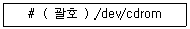
- umount
- eject
- exec
- dumpe2fs
(정답률: 77%)
9. 다음 조건에 해당하는 명령으로 알맞은 것은?
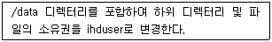
- chown -r ihduser /data
- chown -R ihduser /data
- chown -d ihduser /data
- chown -D ihduser /data
(정답률: 82%)
10. 다음 중 /tmp 디렉터리의 허가권을 확인하는 명령으로 알맞은 것은?(오류 신고가 접수된 문제입니다. 반드시 정답과 해설을 확인하시기 바랍니다.)
- ls -l /tmp
- ls -ld /tmp
- chmod -v /tmp
- chmod -R /tmp
(정답률: 51%)
11. 다음 중 사용자가 설정한 alias가 다음 로그인 시에도 사용가능하도록 등록하는 파일로 가장 알맞은 것은?
- ~/.bash_history
- ~/.cshrc
- ~/.bash_logout
- ~/.bashrc
(정답률: 68%)
12. 다음 중 관리자 계정으로 ihduser의 로그인 셸을 변경할 때 수정하는 파일로 가장 알맞은 것은?
- /etc/shells
- /etc/passwd
- /etc/profile
- ~/.bash_profile
(정답률: 59%)
13. 다음 명령의 결과로 알맞은 것은?
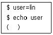
- lin
- echo
- user
- 화면에 아무것도 출력되지 않는다.
(정답률: 55%)
14. 다음 명령의 결과에 해당하는 환경변수로 알맞은 것은?
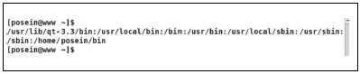
- PWD
- HOME
- PATH
- PS1
(정답률: 68%)
15. 다음 결과에 해당하는 명령으로 알맞은 것은?
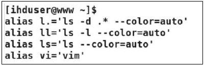
- alias
- alias -l
- ualias
- unalias
(정답률: 50%)
16. 다음 중 리눅스의 표준 셸로 알맞은 것은?
- csh
- ksh
- bash
- tcsh
(정답률: 83%)
17. 다음 중 셸의 역할에 대한 설명으로 알맞은 것은?
- 프로세스 스케줄링을 관리한다.
- 실행중인 프로그램 관리 역할을 수행한다.
- 사용자로부터 명령을 입력받아서 해석한다.
- CPU, 메모리, 디스크 등의 하드웨어를 제어한다.
(정답률: 75%)
18. 다음 중 앨리어스(alias)가 설정된 ls를 해제하는 명령으로 알맞은 것은?
- ualias ls
- unalias ls
- !ls
- ?ls
(정답률: 78%)
19. 다음 중 [Ctrl]+[C]를 입력했을 때 발생하는 시그널 이름으로 알맞은 것은?
- SIGINT
- SIGQUIT
- SIGSTOP
- SIGCONT
(정답률: 63%)
20. 다음은 리눅스 시스템 전체에서 디렉터리만 찾아서 관련 정보를 저장하는 명령을 백그라운드 프로세스로 실행하려고 한다. 다음 ( 괄호 ) 안에 들어갈 내용으로 알맞은 것은?
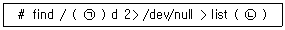
- ㉠ -name, ㉡ &
- ㉠ -name, ㉡ %
- ㉠ -type, ㉡ &
- ㉠ -type, ㉡ %
(정답률: 66%)
21. 다음 중 리눅스 시스템에서 사용하는 시그널 이름과 번호를 확인할 때 사용하는 명령으로 알맞은 것은?
- signal
- signal -l
- kill -l
- kill -n
(정답률: 62%)
22. 다음 중 백그라운드로 실행 중이고 작업번호 2번이 부여된 프로세스를 포어그라운드 프로 세스로 전환하는 명령으로 알맞은 것은?
- bg &2
- bg %2
- fg &2
- fg %2
(정답률: 70%)
23. 다음 결과에 해당하는 명령으로 알맞은 것은?
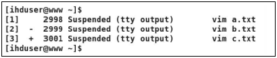
- bg
- fg
- jobs
- kill
(정답률: 82%)
24. 다음 중 동작중인 웹 서버 데몬을 모두 종료 시키는 명령으로 알맞은 것은?
- kill httpd
- killall httpd
- nohup httpd
- signal httpd
(정답률: 80%)
25. 다음과 같이 사용자 제거 작업이 실패하였다. 해당 작업 전에 실행해야할 명령으로 알맞은 것은?
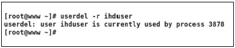
- kill 3878
- kill ihduser
- kill -9 3878
- killall -9 3878
(정답률: 79%)
26. 다음 설명에 해당하는 것은?
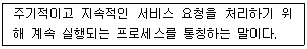
- fork
- inetd
- daemon
- standalone
(정답률: 69%)
27. 다음 중 시스템 부팅 시 리눅스 커널이 최초로 발생시키는 프로세스로 알맞은 것은?
- init
- inetd
- bash
- xinetd
(정답률: 79%)
28. 다음 ( 괄호 ) 안에 들어갈 내용으로 알맞은 것은?
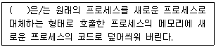
- exec
- fork
- inetd
- standalone
(정답률: 74%)
29. 다음 중 ( 괄호 )안에 들어갈 내용으로 알맞은 것은?
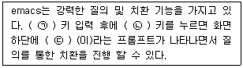
- ㉠ : [Esc], ㉡ : % ㉢ : Query replace:
- ㉠ : [Esc], ㉡ : & ㉢ : Query replace:
- ㉠ : [Ctrl], ㉡ : % ㉢ : Query replace with:
- ㉠ : [Ctrl], ㉡ : & ㉢ : Query replace with:
(정답률: 43%)
30. 다음 중 에디터별 사용되는 키 조합으로 틀린 것은?
- pico - [Ctrl] + [K] : 현재 줄을 삭제
- pico - [Ctrl] + [E] : 커서가 위치한 줄의 끝으로 커서를 이동
- vi - [Ctrl] + [F] : 커서가 위치한 부분부터 한 화면 아래로 이동
- emacs - [Ctrl] + [A] : 현재 커서가 위치한 줄의 끝으로 커서를 이동
(정답률: 50%)
31. 다음 중 pico 에디터에서 지원하는 기능으로 가장 거리가 먼 것은?
- 구문 강조
- 단락 정의
- 맞춤법 검사
- 복사 및 붙여넣기
(정답률: 45%)
32. 다음 중 vim 에디터에서 제공하는 기능으로 가장 거리가 먼 것은?
- 히스토리 기능
- 문법 검사 기능
- 다중 되돌리기 기능
- 질의를 통한 치환 기능
(정답률: 54%)
33. 다음 중 emacs 에디터에서 사용되는 커서 이동 명령으로 틀린 것은?
- [Ctrl] + [C]
- [Ctrl] + [P]
- [Ctrl] + [F]
- [Ctrl] + [N]
(정답률: 52%)
34. 환경 설정을 등록하여 vi 에디터 실행 시 지속적으로 지정한 설정을 이용하려고 한다. 다음 중 ( 괄호 )안에 들어갈 파일명으로 알맞은 것은?
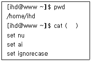
- .vim
- .exrc
- .bashrc
- .config
(정답률: 53%)
35. 다음 중 yum 명령의 저장소 관련 파일들이 위치하는 디렉터리로 알맞은 것은?
- /etc/yum
- /etc/yum.d
- /etc/yum.repos
- /etc/yum.repos.d
(정답률: 53%)
36. 다음은 ihd.tar 파일을 압축해제 없이, 내용만 확인하는 과정이다. ( 괄호 ) 안에 들어갈 내용으로 알맞은 것은?
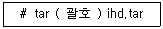
- cvf
- rvf
- tvf
- xvf
(정답률: 66%)
37. 다음 중 압축의 효율성이 가장 낮은 명령은?
- xz
- gzip
- bzip2
- compress
(정답률: 72%)
38. 다음은 기존에 생성된 ihd.tar 파일에 lin.txt 파일을 추가하는 과정이다. ( 괄호 ) 안에 들어갈 내용으로 알맞은 것은?
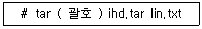
- cvf
- rvf
- tvf
- xvf
(정답률: 58%)
39. 다음 중 totem 패키지를 설치하는 과정에서 질의 시 무조건 승낙하는 명령으로 알맞은 것은?
- yum -i -y totem
- yum -f -y totem
- yum install -f totem
- yum install -y totem
(정답률: 75%)
40. 다음 중 소스(source) 설치 과정의 순서로 알맞은 것은?
- configure → Makefile → make
- Makefile → configure → make
- Makefile → make → make install
- configure → make → make install
(정답률: 75%)
41. 다음 중 압축 효율성이 좋은 순서로 나열된 것은?
- xz ＞ gzip ＞ bzip2
- xz ＞ bzip2 ＞ gzip
- bzip2 ＞ gzip ＞ xz
- bzip2 ＞ xz ＞ gzip
(정답률: 61%)
42. 다음 중 rpm의 설치 관련 옵션으로 틀린 것은?
- -fvh
- -Fvh
- -Uvh
- -ivh
(정답률: 44%)
43. 다음 중 kait.txt 파일 내용을 인쇄하기 위한 명령으로 가장 거리가 먼 것은?
- cat kait.txt ＜ /dev/lp0
- lpr kait.txt
- cat kait.txt ＞ /dev/lp0
- cat kait.txt | lpr
(정답률: 53%)
44. 다음 중 ( 괄호 )안에 들어갈 내용으로 가장 거리가 먼 것은?
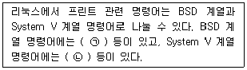
- lpr, lp
- lpc, lprm
- lpr, lpstat
- lpc, cancel
(정답률: 59%)
45. 다음 중 프린팅 시스템인 CUPS의 데몬 환경 설정 파일로 알맞은 것은?
- /etc/cups/cupsd
- /etc/cups/cupsd.conf
- /etc/cups/classes.conf
- /etc/sups/printers.conf
(정답률: 68%)
46. 다음 중 USB로 연결된 스캐너를 검색하기 위한 명령으로 가장 알맞은 것은?
- sane-find-scanner -v
- sane-find-scanner -p
- sane-find-scanner /dev/sg0
- sane-find-scanner /dev/scanner
(정답률: 34%)
47. 다음 중 스캐너 및 이미지 수정작업을 수행할 수 있는 프로그램인 XSANE를 실행하기 위한 명령으로 알맞은 것은?
- xsane
- x-sane
- sane-frontends
- https://www.xsane.org
(정답률: 78%)
48. 다음과 같은 프로그램이 실행되기 위한 명령으로 알맞은 것은?
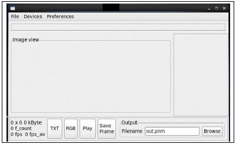
- xcam
- scanadf
- alsamixse
- scanimage
(정답률: 53%)
2과목: 리눅스 활용
49. 다음 중 X 윈도 응용 프로그램의 종류가 나머지 셋과 다른 것은?(오류 신고가 접수된 문제입니다. 반드시 정답과 해설을 확인하시기 바랍니다.)
- dolphin
- nautilus
- konqueror
- Okular
(정답률: 41%)
50. 다음 설명과 같은 경우 관련 설정을 하는 절차로 알맞은 것은?
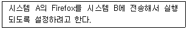
- 시스템 A의 TERM을 변경한다.
- 시스템 B의 TERM을 변경한다.
- 시스템 A의 DISPLAY를 변경한다.
- 시스템 B의 DISPLAY를 변경한다.
(정답률: 60%)
51. 다음 중 X 서버에 접근할 수 있는 클라이언트로 IP 주소가 192.168.12.22인 호스트만 지정하는 명령으로 알맞은 것은?
- xauth + 192.168.12.22
- xauth add 192.168.12.22
- xhost + 192.168.12.22
- xhost add 192.168.12.22
(정답률: 62%)
52. 다음 결과에 해당하는 명령으로 알맞은 것은?(오류 신고가 접수된 문제입니다. 반드시 정답과 해설을 확인하시기 바랍니다.)
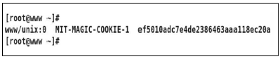
- xauth
- xauth list
- xauth list DISPLAY
- xauth list $DISPLAY
(정답률: 58%)
53. 다음 그림에 해당하는 내용으로 알맞은 것은?
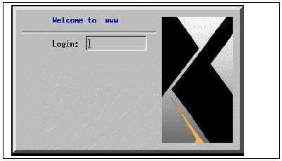
- 윈도 매니저
- 디스플레이 매니저
- 데스크톱 환경
- 파일관리자
(정답률: 62%)
54. 다음 중 텍스트 모드로 부팅된 상태에서 X 윈도를 실행하는 명령으로 가장 알맞은 것은?
- xauth
- xhost
- startx
- gdm
(정답률: 72%)
55. 다음 결과에 해당하는 명령으로 알맞은 것은?
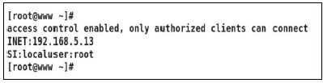
- xhost
- xauth
- xlist
- xinit
(정답률: 58%)
56. 다음 그림에 해당하는 프로그램으로 알맞은 것은?
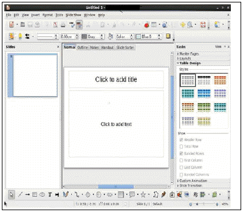
- LibreOffice Calc
- LibreOffice Draw
- LibreOffice Writer
- LibreOffice Impress
(정답률: 72%)
57. 다음 중 NFS 서비스와 가장 거리가 먼 것은?
- RPC
- rpcbind
- portmap
- NetBIOS
(정답률: 50%)
58. 다음 설명에 해당하는 것은?
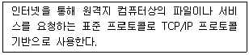
- SMB
- CIFS
- TELNET
- Usenet
(정답률: 38%)
59. 다음 중 할당받은 C 클래스 1개의 네트워크 주소 대역에서 서브넷마스크를 255.255.255.128로 설정 했을 경우에 생성되는 서브네트워크의 개수로 알맞은 것은?
- 2
- 4
- 64
- 128
(정답률: 54%)
60. 다음 중 잘 알려진 포트(Well-Known Port)의 범위로 알맞은 것은?
- 0∼1023
- 0∼1024
- 1∼1023
- 1∼1024
(정답률: 64%)
61. 다음 중 IPv4의 C 클래스 대역에 대한 설명으로 알맞은 것은?
- IP 주소 첫 번째 부분의 2비트가 10인 경우이다.
- IP 주소 첫 번째 부분의 2비트가 11인 경우이다.
- IP 주소 첫 번째 부분의 3비트가 110인 경우이다.
- IP 주소 첫 번째 부분의 3비트가 111인 경우이다.
(정답률: 65%)
62. 다음 중 TCP/IP의 계층과 관련된 명칭으로 가장 거리가 먼 것은?
- 세션 계층
- 전송 계층
- 인터넷 계층
- 네트워크 인터페이스 계층
(정답률: 55%)
63. 다음 중 원격지에 있는 SSH 서버(192.168.5.13)의 포트 번호가 19000으로 변경되었을 경우에 접속하는 방법으로 알맞은 것은?
- ssh -l 19000 192.168.5.13
- ssh -n 19000 192.168.5.13
- ssh -p 19000 192.168.5.13
- ssh -N 19000 192.168.5.13
(정답률: 64%)
64. 다음 중 네트워크 인터페이스 카드의 물리적 연결 여부를 확인할 때 사용하는 명령으로 알맞은 것은?
- arp
- ifconfig
- ethtool
- netstat
(정답률: 64%)
65. 다음 조건일 경우, SSH 인증 파일의 경로는?
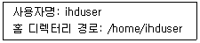
- /home/ihduser/authorized_keys
- /home/ihduser/.authorized_keys
- /home/ihduser/.ssh/authorized_keys
- /home/ihduser/ssh/.authorized_keys
(정답률: 54%)
66. 다음 설명에 해당하는 netstat 명령의 상태 값(State)으로 알맞은 것은?
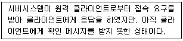
- SYS-SENT
- LAST_ACK
- ESTABLISHED
- SYN_RECEIVED
(정답률: 61%)
67. 다음 중 서버에 접속한 클라이언트의 IP 주소 및 포트 번호를 확인할 때 사용하는 명령으로 알맞은 것은?
- ip
- ss
- arp
- route
(정답률: 48%)
68. 다음 중 시스템에 설정된 IP 주소를 확인하는 명령으로 알맞은 것은?
- ip eth0
- ip show
- ip show addr
- ip addr show
(정답률: 42%)
69. 다음 중 3-way handshaking에서 수행하는 패킷의 순서로 알맞은 것은?
- SYN → ACK → ACK/SYN
- SYN → ACK/SYN → ACK
- ACK → ACK/SYN → SYN
- ACK → SYN → ACK/SYN
(정답률: 69%)
70. 다음 설명에 해당하는 LAN 구성 방식으로 알맞은 것은?
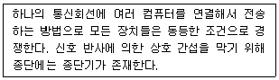
- 링(Ring)형
- 망(Mesh)형
- 버스(Bus)형
- 스타(Star)형
(정답률: 70%)
71. 다음 설명에 해당하는 파일로 알맞은 것은?
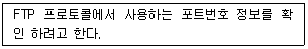
- /etc/protocols
- /etc/services
- /etc/networks
- /etc/resolv.conf
(정답률: 56%)
72. 다음 중 OSI 7계층의 전송 계층에서 사용하는 프로토콜 데이터 단위(Protocol Data Unit)로 알맞은 것은?
- bit
- frame
- packet
- segment
(정답률: 64%)
73. 다음 설명에 해당하는 도메인으로 알맞은 것은?
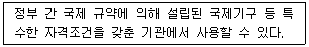
- net
- org
- int
- mil
(정답률: 43%)
74. 다음 그림에 해당하는 명령으로 알맞은 것은?
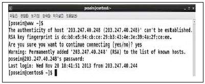
- ssh
- ftp
- telnet
- curl
(정답률: 66%)
75. 다음 중 메일 관련 프로토콜과 가장 거리가 먼 것은?
- POP3
- IMAP
- SMTP
- SNMP
(정답률: 81%)
76. 다음 중 웹 서비스 구성 관련으로 가장 거리가 먼 것은?
- IRC
- URL
- HTML
- HTTP
(정답률: 78%)
77. 다음 ( 괄호 ) 안에 들어갈 내용으로 알맞은 것은?
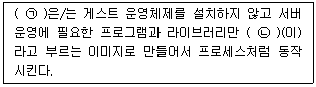
- ㉠ Openstack, ㉡ Container
- ㉠ Openstack, ㉡ Docker
- ㉠ Docker, ㉡ Container
- ㉠ Docker, ㉡ Openstack
(정답률: 61%)
78. 다음 중 임베디드 리눅스에 대한 설명으로 가장 거리가 먼 것은?
- 디바이스 드라이버 프레임 워크가 복잡하다.
- 사용자 모드와 커널 모드 메모리 접근이 복잡하다.
- 소스가 공개되어 있는 관계로 변경 및 재배포가 용이하다.
- 커널과 루트 파일시스템 등 상대적으로 적은 메모리를 차지한다.
(정답률: 51%)
79. 다음 설명에 해당하는 기술로 가장 알맞은 것은?(오류 신고가 접수된 문제입니다. 반드시 정답과 해설을 확인하시기 바랍니다.)
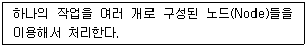
- 고가용성 클러스터
- 부하분산 클러스터
- 고성능 클러스터
- 임베디드 시스템
(정답률: 36%)
80. 다음 설명으로 알맞은 것은?
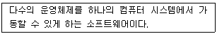
- 메인프레임
- 하이퍼바이저
- 프로비저닝
- 에뮬레이션
(정답률: 64%)
설명: "usrquota"는 사용자별 디스크 용량 제한을 설정하기 위해 /etc/fstab에 설정하는 옵션 값입니다. 이 옵션을 사용하면 각 사용자의 하드 디스크 사용량을 제한할 수 있습니다. "quota"는 전체 파일 시스템에 대한 디스크 용량 제한을 설정하며, "uquota"와 "userquota"는 사용자별 제한을 설정하는 옵션으로 이전 버전의 리눅스에서 사용되었습니다. 현재는 "usrquota"가 권장되는 옵션입니다.